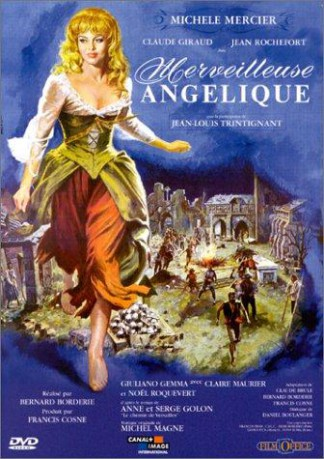

gesehen am 28.01.2018
gesehen am 28.01.2018Alternativ: Angelique: The Road to Versailles (Englischer Titel) gesehen am 28.01.2018
 
 IMDB-Wertung: 6.8 / 10
IMDB-Wertung: 6.8 / 10  Metascore:
Metascore: 
This is the second in the Angélique series. Picking up where the previous adventure ended, Angélique joins her childhood friend Nicolas and his band of bandits. But when tragedy hits, the beautiful and ever resourceful Angélique finds a way to move on. She rescues her children, becomes a successful businesswoman by running her own restaurant, and becomes entangled in politics. But where will her heart lead her next...?
Jahr: 1965
Dauer: 104 Minuten
FSK: 12
Land: Frankreich Studio: GloriaTonspuren:
Untertitel:
Auflösung: 1080p (1920x816) Größe: 7833 MB
Genre: Abenteuer, Liebe, Geschichte
Regisseur: Bernard Borderie
Drehbuch: Hasraf Dulull
Soundtrack: Michel Magne
Darsteller:
 Michèle Mercier als Angélique de Peyrac
Michèle Mercier als Angélique de Peyrac Jean Rochefort als Desgrez
Jean Rochefort als Desgrez Jean-Louis Trintignant als Claude le Petit, dit Le poète croté
Jean-Louis Trintignant als Claude le Petit, dit Le poète croté Giuliano Gemma als Nicolas
Giuliano Gemma als Nicolas Noël Roquevert als Maître Bourjus, l'aubergiste
Noël Roquevert als Maître Bourjus, l'aubergisteDatei: X:\6-Hexalogie(A-Z)\Angelique\Angélique 2. Teil (1965, FSK12, 1920x816).mkv seit 09.01.2018
Festplatte: HD Collection-3(N-Z)-6(A-Z)
 Es gibt insgesamt 9 Filme in der Gruppe '6-Hexalogie(A-Z)\Angelique'
Es gibt insgesamt 9 Filme in der Gruppe '6-Hexalogie(A-Z)\Angelique'